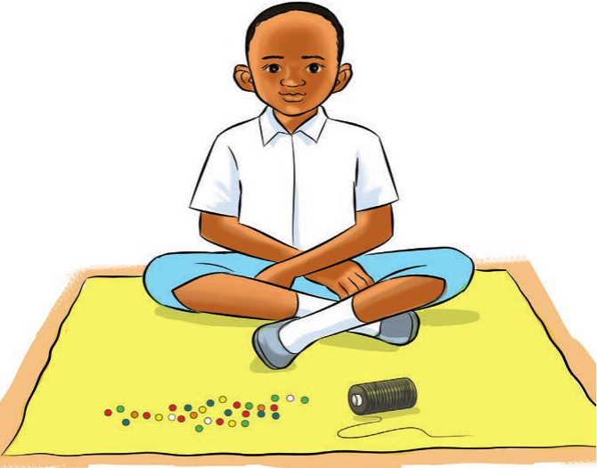
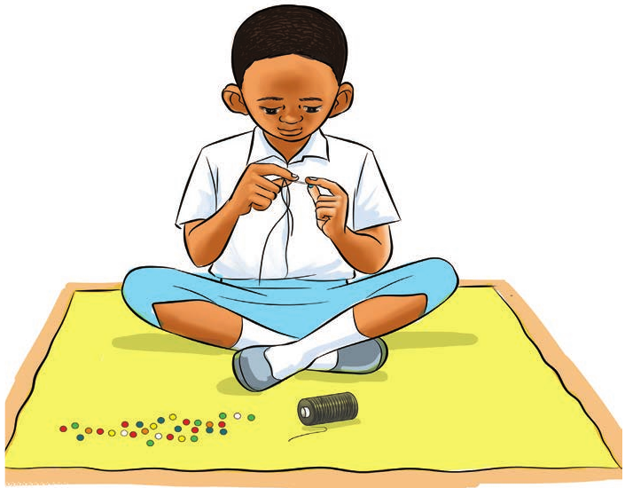
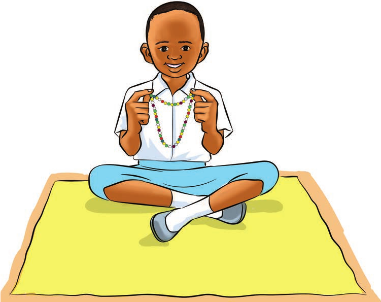

Kutunga shanga
Hatua za kutunga shanga
Chunguza hatua za kutunga shanga katika picha zifuatazo:



Zoezi la 11
1. Ni nini kinaonekana katika picha (a), (b), na (c)?
Shughuli ya kufanya 5
Tengeneza vitu vya sanaa kwa kutunga shanga.